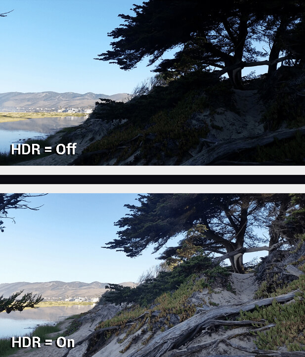
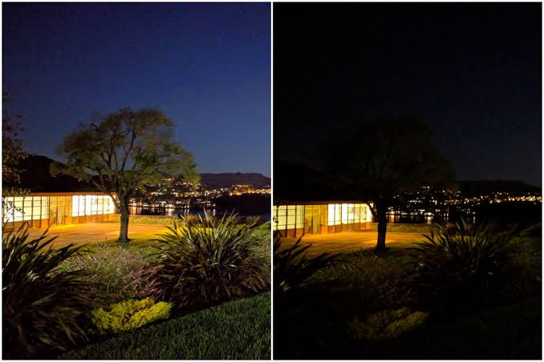

Hi,I am lavaraju.I am pursuing my B.tech in vizag and I am interested in photography.All this started when i came across a article about portrait photography in google cameras.As I am fascinated about photography I went on reading the article.Before telling you what i read in this article i will tell how Portrait mode works with normal cameras.
Generally Portrait shots are taken using two cameras one is for photo and one is for depth sensing.But google engineers achieved portrait photography with minimum hardware by using AI tecnology and utilizing maximum of it's processor power in acclerating the processing speed by using GPU's.They achieved this feature in their google pixel 3 device and implemented in their default camera which is popularly known as google camera.
This app take advantage of advances in neural networks,machine learning technology and GPU hardware to make this even better.Engineers at google created a machine learning model that detects the edges of an object in the frame and differentiate it with the background so that it looks natural and more accurate when compared to other brands cameras.
They used 5 cameras to achieve this technology with each of them focusing on the same object but with in different angles and with difference in their depth from the object.The output images from these 5 cameras are used as input for training the ML model and it outputs the best image among these 5 photos.But it requires more computational power but it handles this pretty well thanks to its tensorflow lite and GPU combination.
After reading that article i got interested in checking that feature unfortunately i am not rich enough to buy a pixel phone so i checked for alternative to check those fetures thanks to xda-developers community i came across gcam which is a mod application that can run mobile with snapdragon processors.I installed it in my oneplus 3t to my surprise i came across some other features along with portrait mode.
we will see more about these in the following sections.
HDR stands for high dynamic range, which, in photography, refers to the balance between the bright and dark areas of your photo.(little bit confused??)Don't worry i will explain it to you in layman terms.With smartphone cameras, it is very difficult to take a photo that has both bright and dark areas in the scene perfectly exposed. The highlights are usually overexposed and clipped to white, and the shadows tend to be too dark to show any detail.
A high dynamic range image is one that retains the details of the image in the dark areas (shadows) while not completely whitening the bright areas (highlights). HDR is a part of the computational photography that modern smartphone cameras use to improve the quality of mobile images. It uses software to eliminate the issue of washed-out highlights and overly crushed shadows in an image. First after pressing the shutter the camera takes continuous photos like 10 to 15 photos with different ranges of highlights and shadows. A high dynamic range photograph is actually made up of a combination of at least two or more images that are taken at different exposures. The camera’s image processor will then combine the images to create one photo with detail in the highlights and shadows.
Finally we will see about night sight
It uses Computational Photography to take good pictures in night time even without using flash the images won't contain much light when compared to photos with flash but the images are far too good and natural when compared to photos with flash. Before you press the shutter button, Night Sight measures your natural hand shake, as well as how much motion is in the scene. If Pixel is stable and the scene is still, Night Sight will spend more time capturing light to minimize noise If Pixel is moving or there’s significant scene motion, Night Sight will use shorter exposures, capturing less light to minimize motion blur.When you press the shutter button in the Google Camera app in a Pixel, it captures the most recent 9 or 15 frames to send to its HDR+ (or Super Res Zoom, but that’s not important right now) software. Per Google, “As soon as you open the camera app, it begins capturing image frames and storing them in a circular buffer that constantly erases old frames to make room for new ones.
Here’s what Night Sight does:
1. Captures 6 to 15 frames
1b. Captures 15 frames if device detects it’s handheld, 1/15 of a second (or less) each
1c. Captures 6 frames if sitting perfectly still, at 1 second each
2. Aligns multiple frames
3. Merges multiple frames
Does both of these things with HDR+’s merging algorithm on Pixel 1 and 2 or using Super Res Zoom’s merging algorithm on the Pixel 3.
4. Uses Fast Fourier Color Constancy algorithm to determine most accurate colors
5. Determine ideal light-to-dark tone mapping to make sure the photo doesn’t look like it was captured with full-on daytime lights
6. Present final photo with per-frame exposure time attached
Tada after these steps we get photograph of our loved ones in the night time.
If you are wondering why i am posting this article after 5 years of all these features debuted in mobile phones.Basically we know these are quiet old in terms of their arriving time but these are the technologies we will see advancements in the near future and as well and the features can be upgraded for better results.As a technology enthusiasts some of you want to explore different carriers in these technologies at that time this may come in handy or some of you just want to know how these things are happening.Hope this article is interesting and useful for some of our friends.